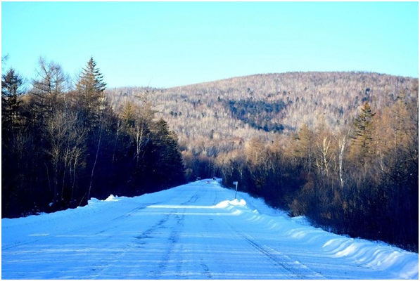
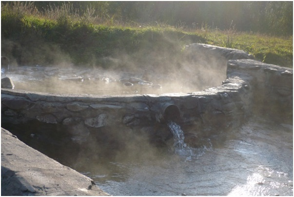
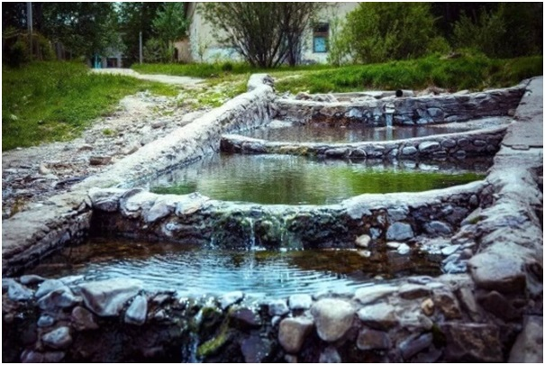

8. Кульдур
Кульдур — небольшой поселок, расположенный у отрогов Малого Хингана, в долине реки Кульдур, известен своими минеральными водами. Кульдурские источники — наиболее характерные представители азотно-кремнистых термальных вод на Дальнем Востоке России. В воде спектральным анализом обнаружены алюминий, железо, марганец, титан, хром, медь, серебро, хлор, литий, барий, стронций, фтор. Со всех сторон Кульдур окружают сопки, покрытые густым лесом, где растут кедр, пихта, липа, на склонах много ягод.
Кульдурский, Стариковский, Нижнетуловчихинский, Верхнетуловчихинский, Венцелевский и Бирский минеральные источники являются не только лечебными ресурсами, но и объектами познавательного и экологического туризма. Стариковский, Нижнетуловчихинский и Верхнетуловчихинский источники являются памятниками природы. На базе горячего Кульдурского источника функционируют несколько санаториев.


